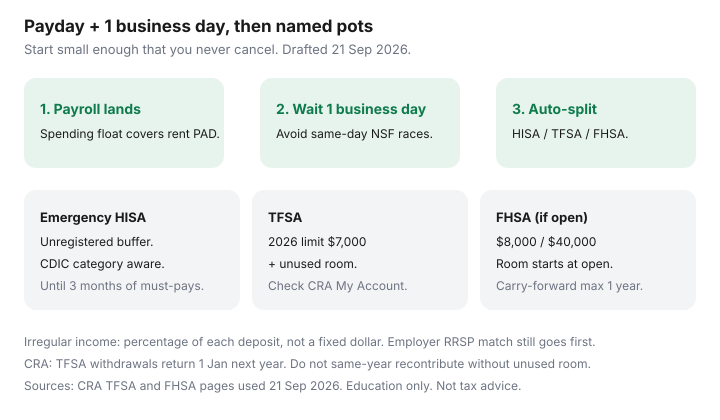

Personal Finance · Canada
Pay Yourself First the Canadian Way: Automate Savings the Day After Payday
Leftover budgeting fails when rent, a car payment, and groceries consume most of take-home pay. You cannot “see what’s left on the 29th” if the 29th is already overdrawn. Pay-yourself-first in Canada is a calendar mechanic: payroll lands, one business day later a PAD or internal transfer skims savings into named pots — emergency HISA, TFSA cash, FHSA if you are eligible — before the grocery cart can argue.
This is savings plumbing, not ETF picks. Contribution-room rules still apply (CRA TFSA $7,000 dollar limit for 2026; FHSA $8,000 participation room in the year you open). Date-stamped 21 Sep 2026.
Disclosure: HISA accounts and budgeting apps are offer types. Saving Optimizer may later add partner links. We do not currently claim bank or app partnerships. This is education, not tax, investment, or debt-relief advice. Confirm TFSA/FHSA/RRSP room in CRA My Account before you automate a registered transfer.
Key takeaways
- Set the auto-transfer for one business day after payroll clears, not payday morning, so holds and overnight posting do not NSF the skim.
- Split destinations: spending float stays; emergency HISA; TFSA contribution; FHSA if you have an open account and unused room.
- Start small enough that you never cancel — then step up quarterly when the NSF count is still zero.
- Irregular income uses a percentage of each deposit, not a fixed dollar that only works in a good month.
- Track net worth monthly. Daily balance-watching is how people raid the HISA for takeout.
Why leftover budgeting fails when rent and groceries dominate take-home pay
A 50/30/20 poster assumes 20% is sitting there after lifestyle. For a lot of Canadian households the rent line is already 30–40% of take-home (see the Housing hub’s city stacks). Leftover systems need surplus. Pay-yourself-first does not require surplus in week one. It requires a transfer small enough to survive February, then a raise. Personal Finance Canada threads repeat the same confession: the month the furnace invoice landed, “whatever is left” was $0 and the TFSA contribution died until next January.
The Canadian twist is registered room. A leftover TFSA contribution in December becomes a December scramble against a $7,000 annual limit (plus unused room). Automation in February is how you stop treating March like a personality test.
Set the auto-transfer 1 business day after payroll clears
Payroll on Thursday often posts Thursday evening or Friday. Same-day transfers compete with rent PADs that also hit Friday. One business day later — Friday payday → Monday transfer — is boring and effective. Use the bank’s recurring internal transfer (EQ lets you schedule between up to eight accounts) or a PAD from chequing to HISA.
If payday is monthly, do not set a calendar date of “the 31st.” Set “1 business day after deposit” or pick the 2nd/16th only after you have watched three cycles. EQ’s 2.75% bonus needs $2,000+ qualifying direct deposits — parking payroll at EQ can fund both the rate and the automation, if ATM access still fits. Otherwise payroll stays at Simplii/Tangerine and the transfer is an e-Transfer or EFT the next business day.

Split destinations: emergency HISA, TFSA contribution, FHSA if eligible
Three default sleeves after the spending float is safe:
- Emergency HISA until the target (often three months of must-pays) is funded. Unregistered, labelled, CDIC-aware. See parking.
- TFSA contribution up to remaining room. 2026 dollar limit is $7,000 (CRA). Room is individual. Automating $269 per bi-weekly pay fills $7,000 in 26 pays if you start in January with $0 unused — but unused room from prior years means you can go higher. Check My Account first (TFSA automation).
- FHSA only if the account is already open. Room does not start until you open. Annual participation room $8,000; lifetime $40,000; carry-forward max one unused year. Bi-weekly ~$308 fills $8,000. Details in FHSA automation.
RRSP is a fourth sleeve when the refund loop is the goal — monthly contributions beat the March panic (RRSP timing). Employer match always goes first if it exists; that is free money, not a vibe.
| Sleeve | Example skim | Annual if 26 pays |
|---|---|---|
| Stay in chequing (bills) | $2,150 | The rent/grocery machine |
| Emergency HISA | $100 | $2,600 toward the buffer |
| TFSA (if room) | $100 | $2,600 of the $7,000 + unused |
| FHSA (if open and eligible) | $50 | $1,300 of the $8,000 |
$250 skimmed from $2,400 is about 10%. If that NSF’s you, cut to $50 until the system is trusted. A cancelled automation is a worse outcome than a small one.
Start small enough that you never cancel—then step up quarterly
Quarterly review dates: 1 Jan (new TFSA/FHSA room), 1 Apr (CRA TFSA room refresh for last year’s slips), 1 Jul, 1 Oct. Raise the skim by $25–$50 only if you had zero NSF and did not raid the HISA. If you raided it, the number was too high or the emergency target was too low — fix the definition, not your character.
Handle irregular income (commission, gig, OT) with percentage rules
Fixed dollars fail on a $1,800 month. Use: “15% of every deposit over $500 goes to the HISA the next business day,” or two accounts — a holding chequing where gigs land, and a weekly transfer of 20% to savings every Friday. Percentage rules survive OT that disappears in January. Self-employed: skim GST/HST into a separate pot the same day as the invoice payment; that is not optional savings, it is the government’s money.
Track net worth monthly without obsessing over daily balances
One sheet, last Sunday of the month: cash, HISA, TFSA, RRSP, FHSA, debts. Ignore daily HISA interest. Daily watching is how people “borrow” $80 from emergency. Wealthsimple, Tangerine, and EQ all show balances in-app; the discipline is looking monthly, not hourly. If net worth is flat because a car loan is falling while the HISA rises, that is success, not a boring month.
Sources & date stamps
- CRA TFSA — 2026 dollar limit $7,000; withdrawals return 1 January next year (pages used 21 Sep 2026).
- CRA FHSA — $8,000 participation room in the year you open; $40,000 lifetime; carry-forward capped at $8,000 (used 21 Sep 2026).
- EQ Bank Personal Account — scheduled transfers between accounts; 2.75% with $2,000+/month qualifying DD (used 21 Sep 2026).
- Community pattern: r/PersonalFinanceCanada payday automation threads (pain point only, not a survey).
Frequently asked questions
What if payday and rent hit the same day?
Keep rent PAD on payroll day from the spending float, and skim savings the next business day. If both compete, the skim loses — which is why the float exists. Alternatively, ask the landlord for a PAD date two days after payday.
Should the emergency fund sit in my TFSA?
Only if you will not need to recontribute the same calendar year. CRA restores TFSA withdrawal room on 1 January next year. Many households keep the emergency HISA unregistered so a job gap does not create excess-TFSA tax.
How small is ‘small enough’?
Whatever survived last month’s groceries without an NSF. $25 per pay is a real system. $400 per pay that you cancel in week three is not.
Do I contribute to RRSP or TFSA first in this automation?
Employer match first. Then usually emergency HISA to a basic buffer, then TFSA for flexible room, then RRSP if you want the refund loop, then FHSA if you are an eligible first-time buyer with an open account. Income level can flip TFSA vs RRSP — that is a tax question, not a payday mechanic.
Can I use a budgeting app for this?
Apps can watch categories. The save still has to be a bank-level PAD or internal transfer. If an app is useful, treat it as an offer type — the automation lives at the bank so a cancelled subscription cannot stop the skim.